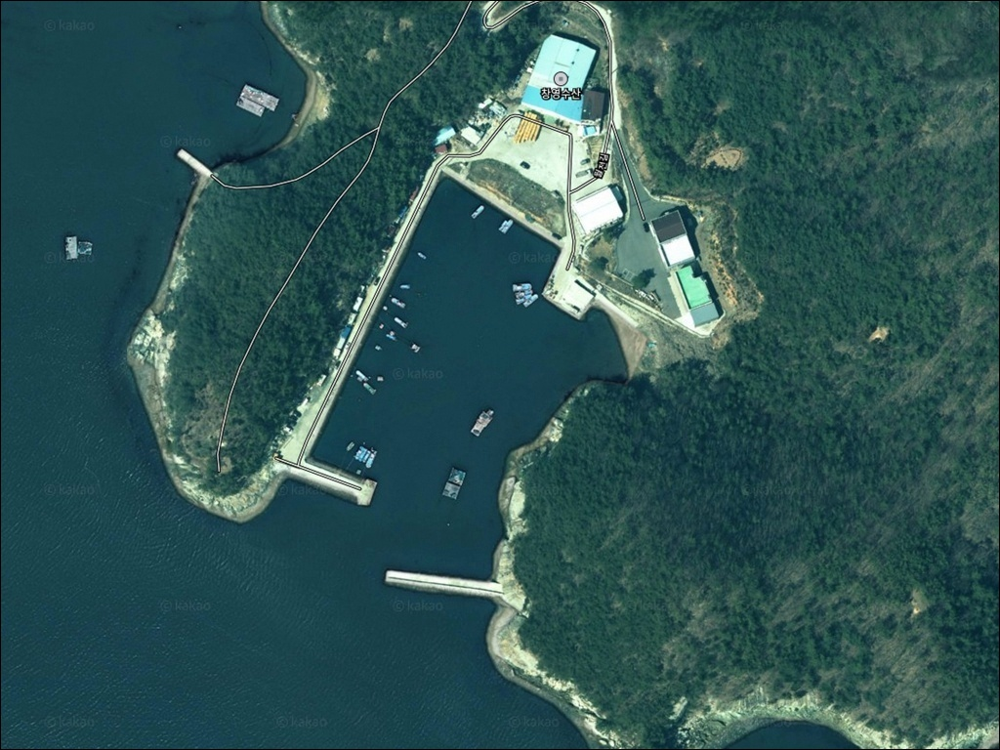
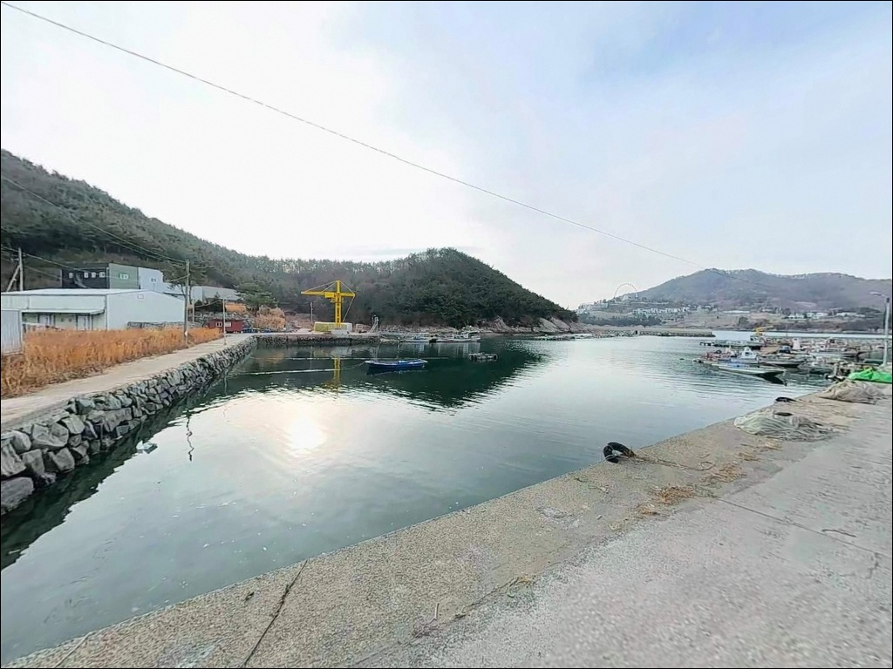
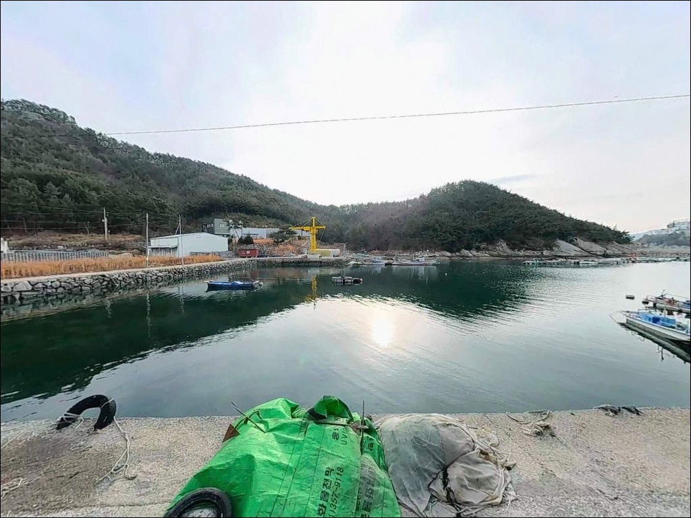
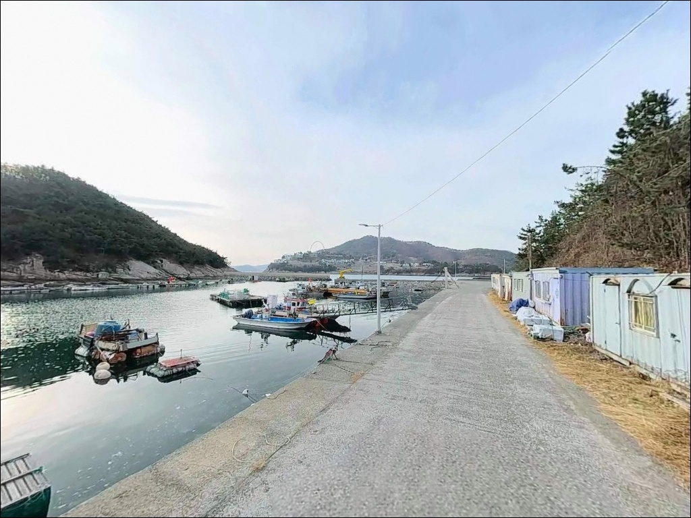
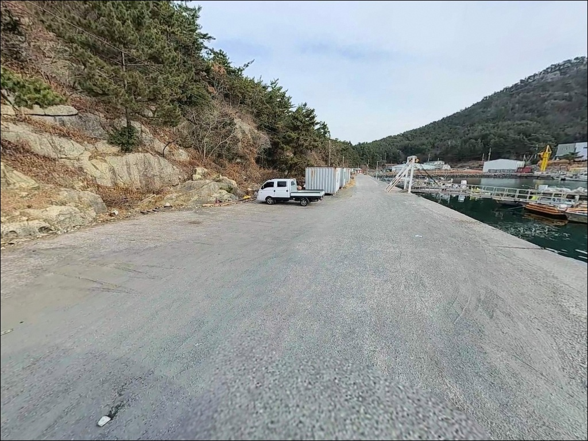
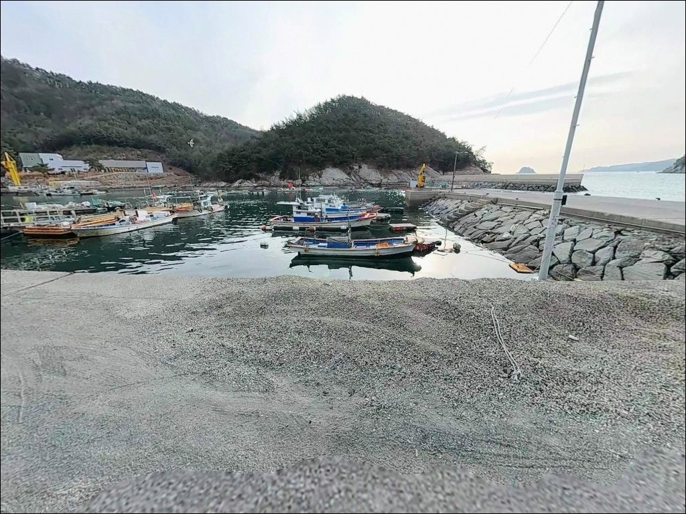
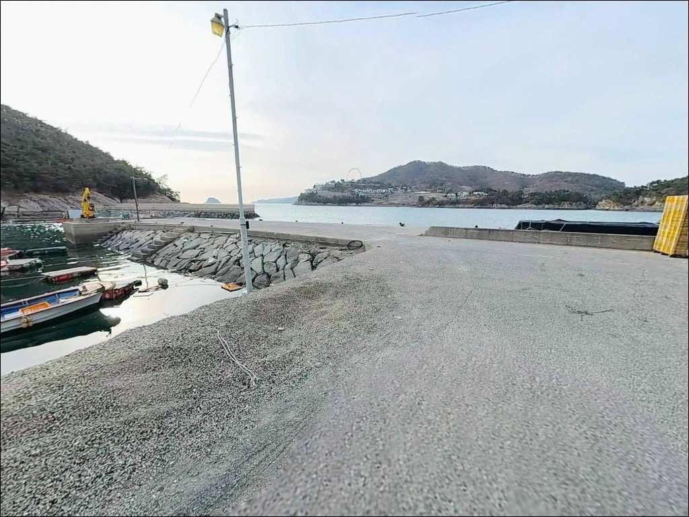
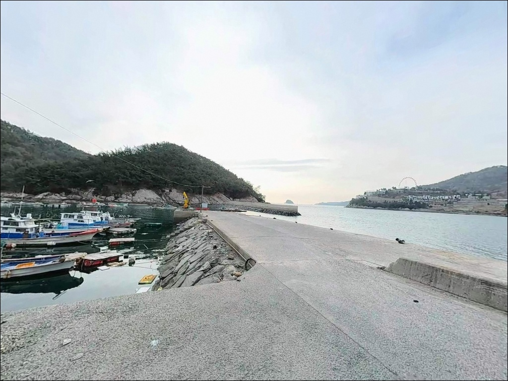
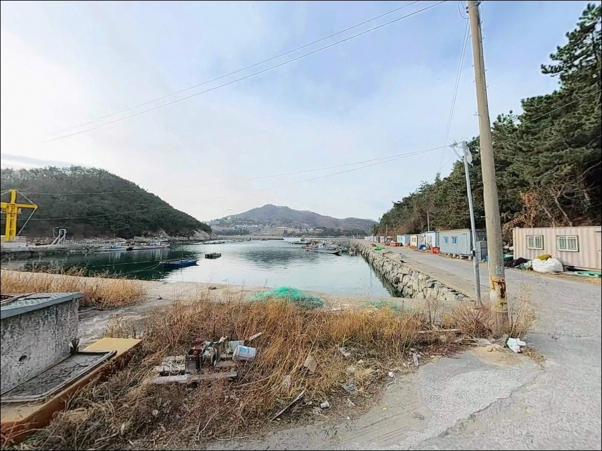

조류 강한 돌산도 우두리선착장, 정조 타이밍에 살아나는 볼락 입질
이 페이지에는 광고(제휴 링크 포함)가 있으며, 광고 링크를 통해 구매하면 운영자가 판매 수익 또는 수수료를 받을 수 있습니다. 포인트 사진: 카카오맵 스카이뷰·로드뷰. 이 페이지의 지도·사진 이미지는 카카오맵의 실제 서비스 이미지와 다를 수 있습니다.


포인트 안내
우두리선착장
전남 여수시 돌산읍 우두리 산 19-2
돌산도 북단 수로 옆 선착장을
물때 계산 없이 찾아가면
조류가 너무 강해 채비 컨트롤이 어려워집니다.
이 포인트는 수로 조류가 창·낙조 방향으로 규칙적으로 흐르는 구조라
물때 타이밍이 조과를 결정하는
첫 번째 변수입니다.
이 글은 우두리선착장의
진입 동선, 주차 여건, 차박 환경,
낚시 방식별 지형 조건에 집중합니다.
조황 단정이나 특정 어종 보장은
이 글의 범위에 포함되지 않습니다.

1. 진입 동선과 포인트 접근 여건
우두리선착장은 돌산대교 또는 거북선대교를 통해
돌산읍으로 진입한 뒤
해안 방향 도로를 따라 내려오는 구조입니다.
진입로는 돌산로에서 갈라지는 지방도급 도로로 연결되며,
전 구간 포장이 되어 있습니다.
마지막 해안 접근 구간은 1차선 폭의 경사 도로가 포함되어 있습니다.
승용차와 SUV는 진입에 큰 어려움이 없으나,
대형 캠핑카나 루프탑 차량은
출발 전 위성지도로 진입로를 확인하는 편이 안전합니다.
회차는 선착장 입구 부근 공간에서 가능합니다.
주차는 선착장 인근 공영주차장(돌산읍-1)을 활용합니다.
주차면 45대 규모로 무료 운영되며,
버스 주차도 가능한 규모입니다.
이 일대 소형 선착장 중
주차 여건이 가장 안정적인 편에 속합니다.

2. 차박 환경과 야간 체류 여건
우두리선착장 일대는 해안 도로와 접하는 구조로,
완전한 오지형 포인트는 아닙니다.
민박과 펜션이 인근에 있어
주간에는 관광객 통행이 다소 있는 편이나,
야간에는 선착장 주변 통행이 줄어
낚시 중심의 야간 체류 환경은 나쁘지 않습니다.
가로등은 일부 구간에 존재하나
선착장 안벽 발밑은 조명이 충분하지 않을 수 있습니다.
야간 낚시 시에는 헤드랜턴을 반드시 착용해야 하며,
야경은 돌산대교와 거북선대교 방향으로
여수항 불빛이 수면에 반사되는 구조입니다.
차박 공간으로 활용하려면 공영주차장을 기점으로 삼는 방식이 현실적입니다.
다만 도심 접근성이 높은 만큼
완전 격리된 분위기를 기대하기보다
낚시 후 편의 중심의 짧은 체류 형태가
이 포인트에 맞는 차박 방식입니다.


3. 주변 편의시설 및 인프라 현황
우두리 시가지 방향으로 차량 5분 거리 안에
CU, GS25 편의점이 운영됩니다.
하나로마트도 반경 3km 이내에 있어
식품과 낚시 소품 구비가 가능합니다.
주유소는 돌산대교 진입로 방향에서
차량 5분 이내 거리에서 이용할 수 있습니다.
돌산대교만 건너면 롯데마트(여수점)와 연결되어
대규모 장보기와 낚시용품 구비도 가능합니다.
여수 수산시장도 반경 3km 권역 안에 있어
출조 전 현지 재료 구입에 활용할 수 있습니다.
응급 상황이나 갑작스러운 장비 추가가 필요할 때는
돌산대교를 건너 여수 시내로 이동하는 동선이 가장 빠릅니다.
이 일대는 남해안 소형 포인트 중 편의 인프라 접근성이 양호한 편입니다.

4. 방문 전 반드시 챙겨야 할 준비사항
우두리선착장은 수로 인접 구조로
조류가 창·낙조 방향에 따라 규칙적으로 흐릅니다.
바다타임에서 여수 돌산 기준 물때를 확인하고,
조류가 느려지는 정조 전후를 노리는 것이
채비 컨트롤과 조과를 동시에 챙기는 기본 전략입니다.
외해 방향이 열려 있어 동풍·남동풍이 불 때는
파도가 선착장 안벽에 직접 들어올 수 있습니다.
기상청 해상 예보를 출조 당일 아침 한 번 더 확인하고,
바람 세기가 강할 경우 입장을 재고하는 것이 안전합니다.
여분 채비는 예상보다 넉넉하게 준비하는 편이 좋습니다.
선착장은 여객선과 유람선이 접안하는 공공 공간입니다.
어선 이동 동선과 어구를 방해하지 않는 자리를 우선으로 잡고,
야간 낚시 시에는 구명조끼 착용이 기본입니다.
취사 시 연기와 냄새 발생에 주의하고
쓰레기는 전량 수거해 반출하는 것이 이 포인트의 기본 매너입니다.

5. 지형 기반 낚시 여건 분석
우두리선착장은 돌산도 북단 해안선에 위치하며,
돌산대교와 거북선대교 사이 협수로의 영향을 받는 구조입니다.
선착장 전면 수심은 안벽 직하 기준 4~7m 내외로 형성되며,
바닥은 암반과 펄이 혼재되어 있어
다양한 어종이 서식하는 조건을 갖추고 있습니다.
수로 조류가 규칙적으로 흐르는 구조상
선착장 끝단은 조류 변화가 집중되는 구간입니다.
이 끝단은 조류가 방향을 바꾸는 길목 역할을 하여
회유성 어종이 지나는 구간으로 기대해볼 수 있습니다.
정박 선박 사이 안벽 밀착 공략도
이 지형에서 유효한 탐색 방식입니다.
야간에는 대교와 시내 불빛이 수면에 반사되어
집어 효과가 자연스럽게 발생합니다.
별도 집어등 없이도 볼락과 전갱이 반응이 있는
구조 조건입니다.
출조 전에 돌산읍 일대 조황을 검색해
현장 활성도를 먼저 파악하고 가시기 바랍니다.


6. 포인트에 어울리는 낚시 스타일
볼락 라이트게임이 이 포인트에서
가장 잘 맞는 낚시 방식입니다.
안벽 직하를 1~3g 지그헤드로 천천히 탐색하는 방식이 기본이며,
야간 야경으로 집어 조건이 자연스럽게 만들어집니다.
가을에서 겨울로 접어드는 시기에 씨알이 올라오는 경향이 있습니다.
에깅도 이 포인트 구조와 잘 맞습니다.
선착장 끝단에서 수로 방향으로 던져
바닥권을 가볍게 끌어오는 방식이 유효합니다.
수심 4~7m의 암반·펄 혼합 바닥은
갑오징어가 자리 잡기 좋은 조건이며,
해질녘 이후 입장이 이 낚시 스타일에 유리합니다.
찌낚시는 조류 흐름을 타는 전유동 채비로
선착장 끝단 바깥쪽을 흘리는 방식이 이 지형에 적합합니다.
본류대를 길게 흘려주면 감성돔 시즌에
씨알을 기대해볼 수 있습니다.
원투낚시도 선착장 전면 바닥 구간을 노리는 방식으로
바닥층 회유 어종을 공략하는 데 활용할 수 있습니다.

낚시 여건이 여의치 않을 때 이동하는 대안 포인트
우두리선착장에서 조류가 너무 강하거나
자리 여건이 좋지 않으면
신기항 방파제(돌산읍 신복리)가 첫 번째 대안입니다.
약 8km 거리로 같은 돌산도 안에 위치하며,
볼락 루어·에깅·원투 모두 가능한 공인 포인트입니다.
화장실이 구비되어 있어 장시간 체류에도 유리합니다.
조류 흐름을 더 살리고 싶다면
돌산대교를 건너
진남항(국동항) 방향으로 이동하는 선택지도 있습니다.
낚시 공간이 넓고 자리 확보가 수월한 편이며,
갈치·문어·참돔 시즌에는 선상 출조도 이루어지는 거점입니다.
차박 여건을 우선으로 생각한다면
방죽포해수욕장 인근(돌산읍 평사리)이
해안 주차 공간이 넓고 화장실 접근성도 좋은 대체 후보입니다.
우두리선착장에서 돌산도 해안 도로를 따라
내려가는 동선으로 연결됩니다.

물때와 진입 조건을 갖추면
우두리선착장은 도심 가까운 괜찮은 포인트입니다
볼락 라이트게임이나 에깅을 즐기는 낚시인이라면
우두리선착장의 수로 조류와 야간 집어 조건은
잘 맞는 구조입니다.
여수 시내와 가깝고 공영주차장이 있어
편의 중심의 반나절 출조지로도 활용하기 좋습니다.
다만 외해 방향이 열려 있어
동풍·남동풍이 강한 날은
파도가 선착장 안벽에 직접 들어올 수 있습니다.
기상 확인과 물때 계산을 갖추고 나서야
이 포인트가 제값을 하는 구조입니다.
낚시 후 조용히 하룻밤 머무는 차박을 계획한다면
공영주차장을 기점으로 삼되,
도심 인접 구조에 맞게 소음과 취사 연기를 최소화하는 방식으로 운용하면
낚시와 차박을 동시에 즐길 수 있는 여수 돌산도의 조용한 거점이 됩니다.